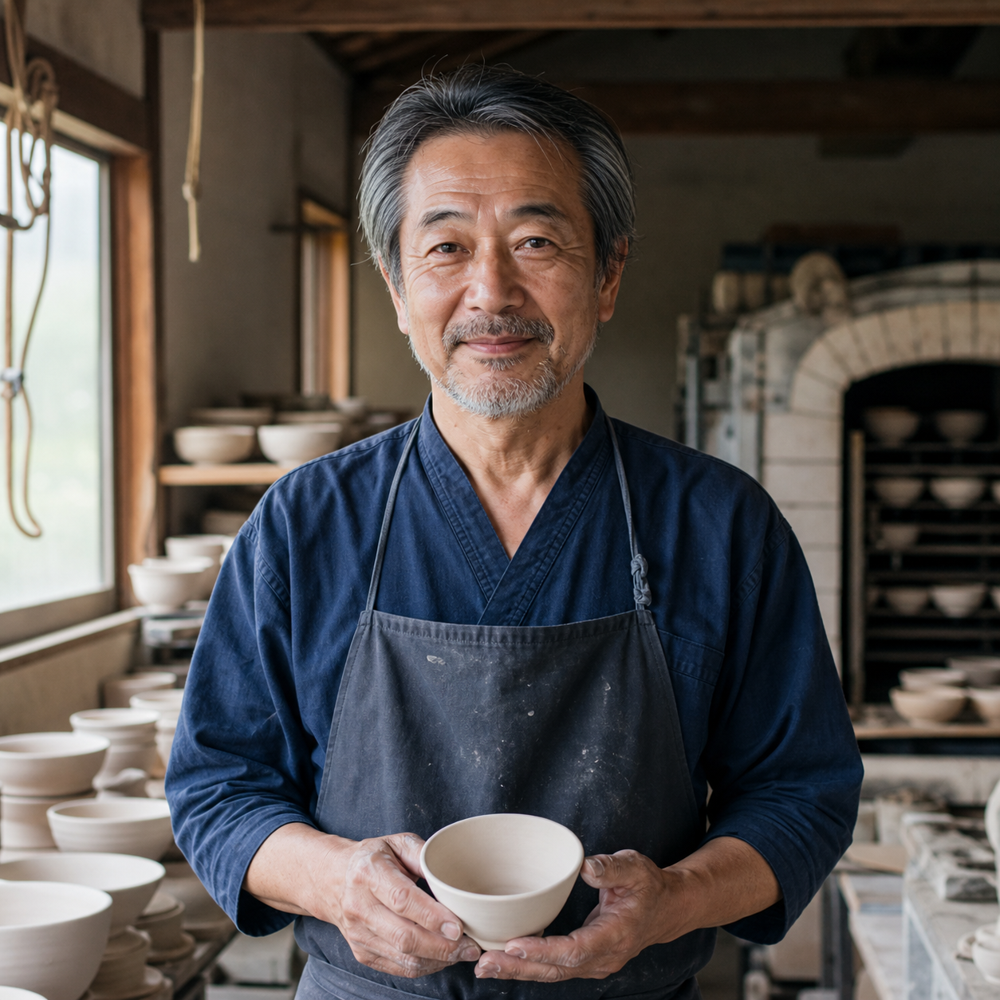
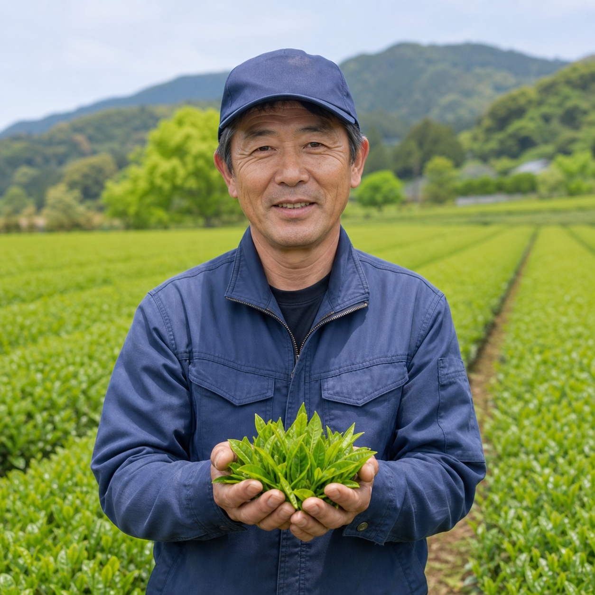
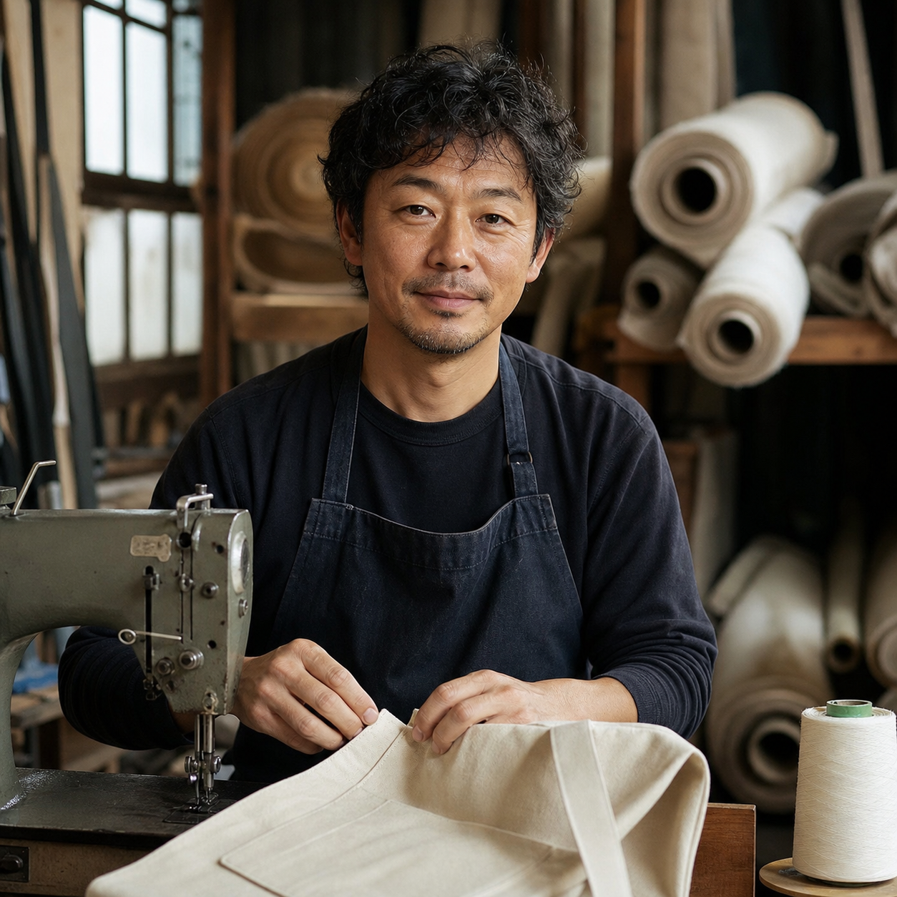
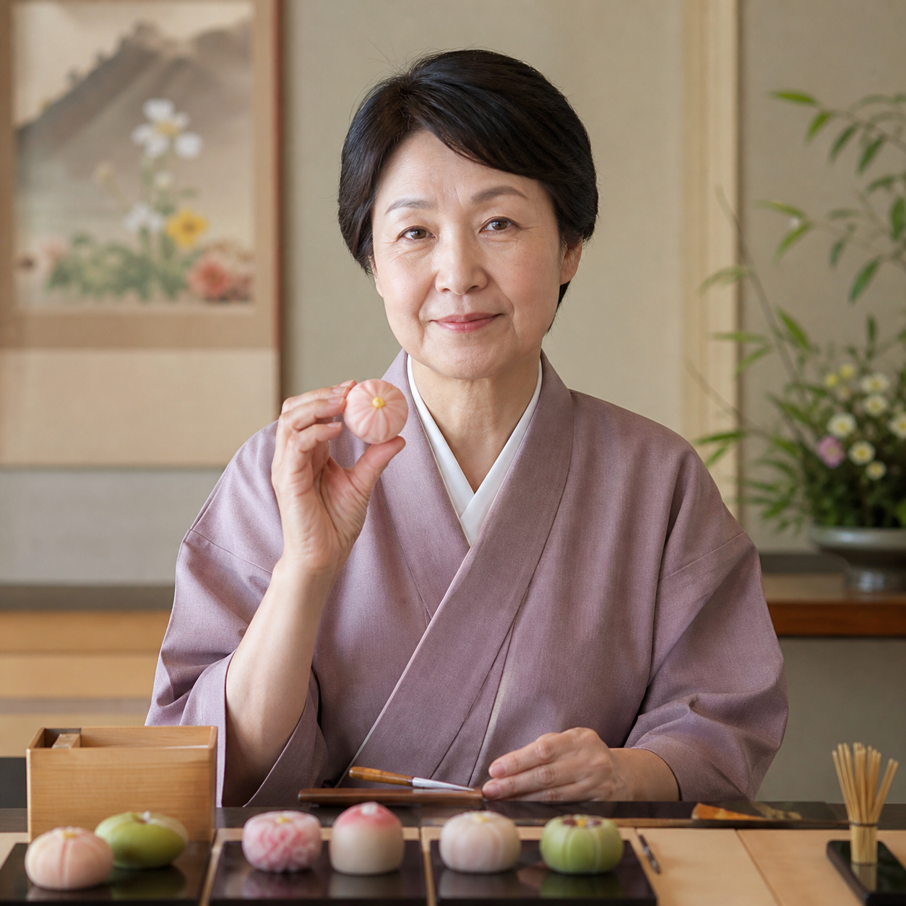

食品
季節や暮らしのテーマに合わせて、編集部が今月選んだ商品を紹介します。
食品

飲料
専門家渋みと甘みの調和が美しい。
生産者茶葉の香りが立つ火入れを心がけています。
編集部毎日の一服にも贈り物にも選びやすい煎茶です。

食品
専門家香りと口溶けの違いを一粒ずつ楽しめます。
生産者素材ごとに温度と時間を細かく調整しています。
編集部温度設計まで行き届いた仕上がり。

家電・デジタル
専門家声と楽器の輪郭を自然に再現します。
生産者小さな部屋でも扱いやすい設計を目指しました。
編集部置き場所を選ばない端正な設計。

ギフト
専門家卵の風味となめらかな口当たりが調和しています。
生産者世代を問わず楽しめる味に仕上げました。
編集部気負わず感謝を伝えられる贈り物です。

趣味・アウトドア
専門家荷物の重さが偏りにくい実用的な設計です。
生産者使い込むほど帆布の風合いが深まります。
編集部街でも自然の中でも使いやすい容量です。

食品
専門家香りと甘さの余韻をゆっくり楽しめます。
生産者時間とともに深まる香りを目指しました。
編集部少量ずつ味わいたい大人の贈り物です。

生活雑貨
専門家一輪でも安定して飾れる重心設計です。
生産者素材の表情を残して一つずつ仕上げています。
編集部素材の表情と余白が豊かです。
素材や技術、ものづくりに込めた考えを、つくり手の言葉とともに紹介します。

「毎日手に取ってもらえる軽さと、料理を受け止める白にこだわりました。」
 この人の商品毎日の料理を受け止める、白磁の器¥4,400 税込→
この人の商品毎日の料理を受け止める、白磁の器¥4,400 税込→
「山の寒暖差がつくる香りを残すため、茶葉を深く蒸しすぎず仕上げています。」
 この人の商品香りをひらく、山の煎茶¥2,160 税込→
この人の商品香りをひらく、山の煎茶¥2,160 税込→「北海道の森を思い出せるよう、枝葉の青さまで感じる香りに整えました。」
 この人の商品森の香りをまとう、ハンドバーム¥3,080 税込→
この人の商品森の香りをまとう、ハンドバーム¥3,080 税込→
「使い込むほど手になじみ、その人だけの表情になる帆布を選んでいます。」
 この人の商品使うほどになじむ、帆布のデイパック¥9,800 税込→
この人の商品使うほどになじむ、帆布のデイパック¥9,800 税込→専門分野から見た評価や着眼点を、商品とともに紹介します。
「外側の香ばしさと中心のしっとり感に、焼成技術の確かさを感じます。」
 評価した商品香ばしいチョコレートのティグレアソート¥2,880 税込→
評価した商品香ばしいチョコレートのティグレアソート¥2,880 税込→
「透明感のある見た目と甘酸味のバランスがよく、季節感の伝わる涼菓です。」
評価した商品果実を味わう、フルーツミックスゼリー¥3,240 税込→「口どけの温度設計がよく、それぞれの風味が輪郭を失わず広がります。」
評価した商品一粒ずつ味わう、ボンボンショコラ¥3,800 税込→「生地のきめと餡の水分量がよく、素朴ながら完成度の高い定番菓子です。」
 評価した商品毎日食べたくなる、老舗のどら焼き¥2,400 税込→
評価した商品毎日食べたくなる、老舗のどら焼き¥2,400 税込→新しいコメントや記事など、情報が更新された商品を紹介します。
食品・スイーツ
専門家なめらかな口当たりと、卵の風味のバランスが良好です。
生産者贈る相手を選ばない、やさしい甘さに仕上げました。
編集部感謝を伝える贈り物として選びやすい一品です。

生活雑貨・インテリア
専門家盛り付けやすさと収納性を両立した形です。
生産者料理を引き立てる白と、手になじむ薄さを追求しました。
編集部和洋を問わず日常使いしやすい器です。
家電・デジタル
専門家小型ながら声と楽器の輪郭を自然に再現します。
生産者置く場所を選ばないサイズと操作性を大切にしました。
編集部初めての一台として検討しやすいモデルです。
工芸品・地域産品
専門家口径と重心の設計により、一輪でも安定して飾れます。
生産者素材ごとの表情を残しながら、一つずつ仕上げています。
編集部小さな空間にも取り入れやすい静かな佇まいです。
趣味・アウトドア
専門家荷重が偏りにくく、日常に必要な容量を確保しています。
生産者使い込んだ帆布の風合いを楽しめるよう仕立てました。
編集部街と小旅行の両方で使いやすいサイズです。
食品・スイーツ
専門家香りと甘さの余韻をゆっくり楽しめる仕上がりです。
生産者時間とともに生地へ香りがなじむよう焼き上げました。
編集部少量ずつ味わいたい大人の贈り物です。
いいモノ認証機関による認証を、公開情報で確認できる商品を紹介します。
東京｜焼き菓子
生産者焦がしバターの香りを大切に焼き上げました。
専門家バターとチョコレートの余韻が調和しています。
編集部贈り物にも選びやすい端正な一箱です。
岡山｜食品・スイーツ
生産者果実ごとの香りと食感を大切にしています。
専門家甘酸味と食感の組み合わせが楽しめます。
編集部彩りがよく季節の贈り物に選びやすい一品。
静岡｜飲料
生産者茶葉の香りが立つ火入れを心がけています。
専門家渋みと甘みの調和が美しい煎茶です。
編集部日常使いと贈り物の両方に選びやすいお茶です。
佐賀・有田｜生活雑貨
生産者料理を受け止める白を追求しました。
専門家盛り付けやすさと収納性を両立した形です。
編集部和洋を問わず毎日使える器です。

北海道｜美容・ケア
生産者北海道の森を思わせる香りに。
専門家香りの残り方が穏やかで日常使いしやすい処方です。
編集部べたつきにくく日常使いしやすい一品。

愛知・尾州｜ファッション
生産者織りの表情を残した生地です。
専門家動きやすさと生地の立体感を両立しています。
編集部仕事と休日の両方で頼れる一着。
季節や用途、贈る場面に合わせて、選ぶときに知りたいポイントを整理しました。
生産地やブランドがものづくりを続ける地域から商品を探せます。
いいモノの選定基準
商品の品質や特徴、つくり手の情報を、公式情報と編集部の確認をもとに整理します。認証情報、専門家の評価、利用者の声が確認できる場合は、出典を明記して紹介します。
選定基準を詳しく見る →


専門家季節感と甘酸味のバランスが秀逸。
生産者果実ごとの食感と香りを残して仕上げました。
編集部夏の贈り物として見た目にも涼やかな一品です。